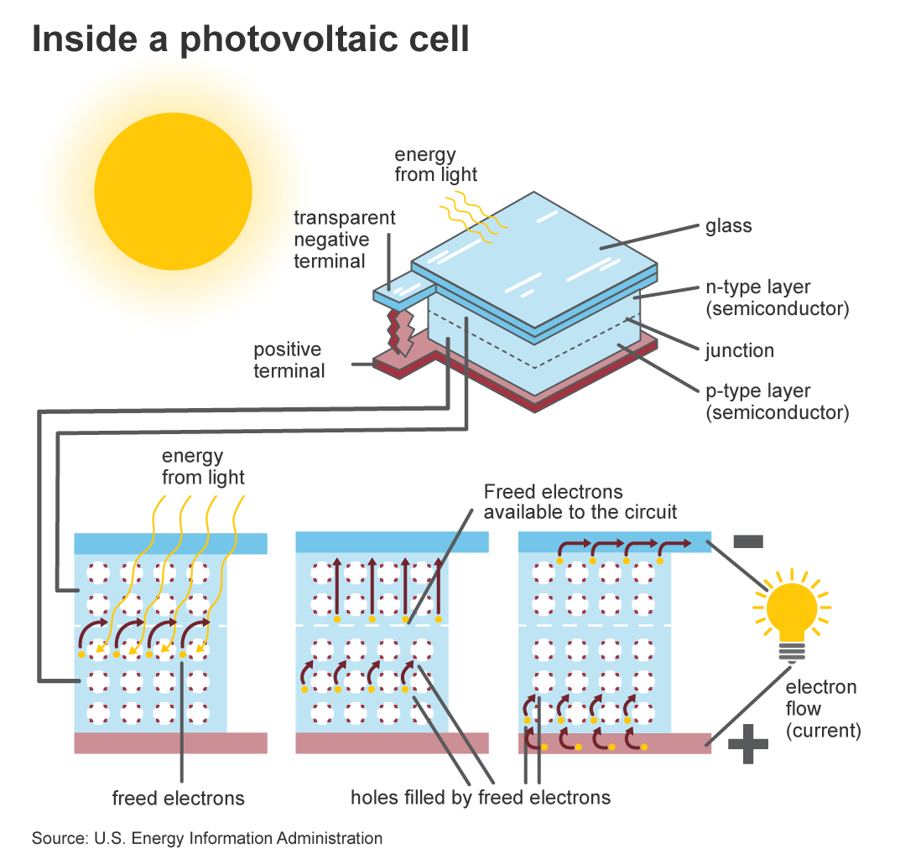
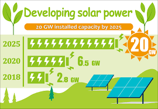
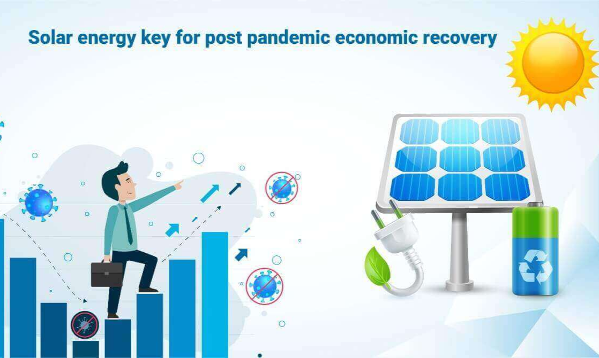
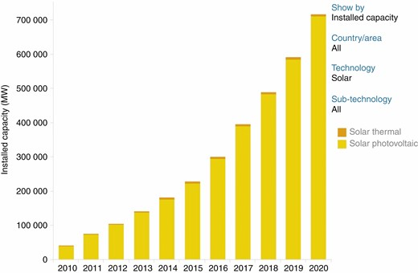
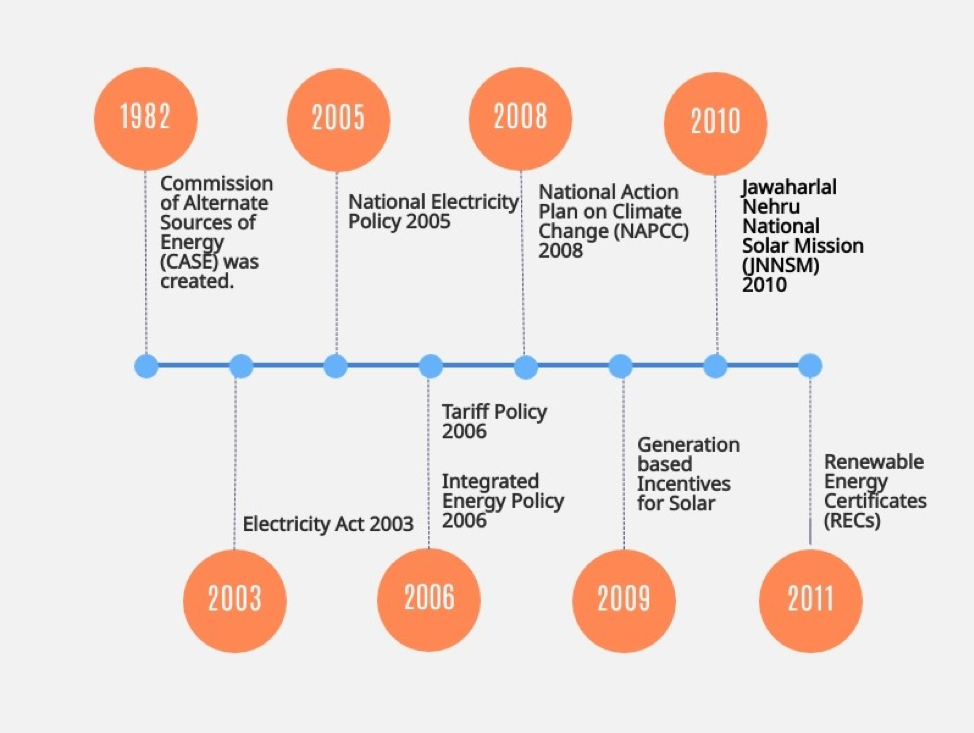
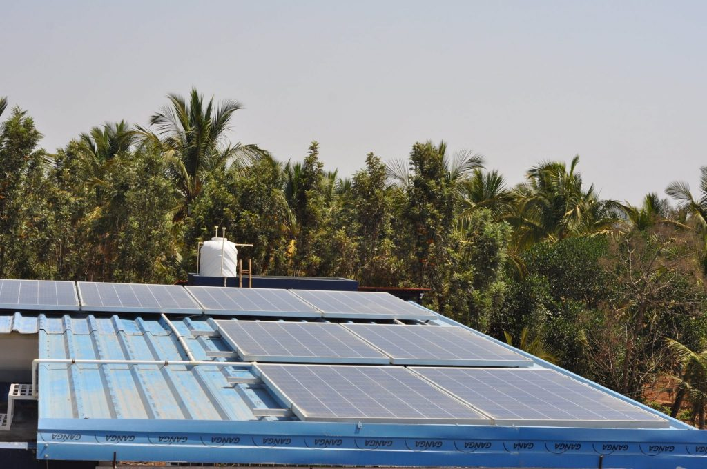
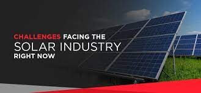
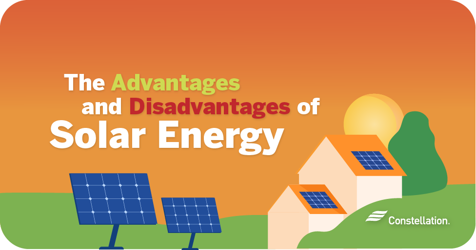

Solar energy is one of the most abundant sources of energy available. Solar energy is the energy that is in sunlight. Solar technologies can be used to generate electricity. Solar technologies are becoming more efficient and less expensive and it is being used in an increasingly diverse range of applications. Solar energy is one of the most popular forms of renewable energy. It is considered to be a clean source of energy because it does not produce emissions. Solar technologies have the potential to contribute significantly to the goal of reducing greenhouse gas emissions. Solar power is also considered to be a very secure form of energy, as there are no moving parts and no fuel. Solar panels are used to capture the sun’s energy and convert it into electricity. Solar panels are usually made of silicon, a material that is very good at absorbing sunlight. The sunlight hits the solar panel and produces an electrical current. This current is then sent to an inverter, which converts the DC into AC. The AC can then be used to power your home or business. Solar panels are a great way to reduce your carbon footprint and save money on your electricity bill.
Solar energy for sustainable development is an amazing way to power your home while helping the environment. There are many benefits of solar energy for sustainable development. Solar energy is renewable, meaning it will never run out. It also doesn’t produce harmful greenhouse gases. Solar panels have a very small carbon footprint. The solar panels used to power an average home has the same carbon footprint as two round-trip flights from New York to London! Not only is solar energy good for the environment, but it is also very economical. The initial cost of solar panel installation can be expensive, but solar panels will save you money in the long run by reducing your electric bill. Solar power is also increasingly becoming more available as technology improves and solar farms are built to provide solar power to even more homes and businesses. As solar energy becomes more popular and more available, it is sure to help sustainable development in a big way!
 Solar energy is environmentally friendly technology, a great energy supply and one of the most significant renewable and green energy sources. It plays a substantial role in achieving sustainable dev elopment energy solutions. Therefore, the massive amount of solar energy attainable daily makes it a very attractive resource for generating electricity. Both technologies, applications of concentrated solar power or solar photovoltaics, are always under continuous development to fulfil our energy needs. Hence, a large installed capacity of solar energy applications worldwide, in the same context, supports the energy sector and meets the employment market to gain sufficient development. This paper highlights solar energy applications and their role in sustainable development and considers renewable energy’s overall employment potential. Thus, it provides insights and analysis on solar energy sustainability, including environmental and economic development. Furthermore, it has identified the contributions of solar energy applications in sustainable development by providing energy needs, creating jobs opportunities and enhancing environmental protection. Finally, the perspective of solar energy technology is drawn up in the application of the energy sector and affords a vision of future development in this domain.
Policy infrastructure in the renewable energy sector in India took shape with the foundation of the Commission of Alternate Sources of Energy (CASE) in 1981, in the Department of Science & Technology. It became an independent Department of New Energy Sources (DNES) in 1982 and a full-fledged Ministry in 1992.The Ministry of New and Renewable Energy (MNRE) is the nodal Ministry of the Government of India for all matters relating to new and renewable energy. The broad aim of the ministry is to develop and deploy new and renewable energy for supplementing the energy requirements of the country. They provide direct and indirect tax benefits such as sales tax, excise duty exemptions, and custom duty exemptions.
 infrastructure and supply chain delays :President Biden’s clean energy plan involves a power grid overhaul for the U.S. plus solar manufacturing incentives
Solar industry reputation :Find a trusted source to research reliable solar companies. Fill out the form on this page to reach a qualified installer in your area
Pushback from utility and energy providers :Create a system where solar energy use benefits providers and energy customers alike.
Access for renters :The increase in community solar programs allows more people to use solar energy.
Residential installation costs :The Residential Clean Energy Credit has been extended until 2034, giving homeowners another decade to claim this federal credit. Research other eligible solar rebates and incentives for your state.
How Does Community Solar Work : Community solar projects generate electricity from sunlight and the electricity flows through a meter to the utility grid. Community solar subscribers (i.e., households, businesses, or any other electricity customer) pay for a share of the electricity generated by the community solar project. This is typically in the form of a monthly subscription fee.
Benefits of Community Solar :
Energy Source : Fossil fuel remains a resource in declining supply that, when burned to create energy, releases harmful byproducts into our atmosphere. Solar power has the potential to help us minimize our use of fossil fuels and the impact we have on the environment.
Electric Bill : Solar energy can help most consumers power their homes as an alternative or supplement to purchasing electricity from a grid. With power prices on the rise, consumers stand to save a considerable amount on monthly power bills by switching to solar.
Energy Independence : A home reliant entirely on solar power features the capacity to function entirely off-grid, especially when supplemented with a solar battery system to maintain power during non-daylight hours. These battery systems can also turn solar systems into emergency backups during power outages.
Benefits the Community:A process known as net metering allows consumers to sell excess electricity their panels produce back to the utility company, further reducing utility bills. This often reduces a community’s reliance on fossil fuels, as well.
Technology Is Improving and Prices Are Decreasing : Technology has improved tremendously since the early days of solar power and advancements continue to be made every day. Better yet, despite these advancements, solar’s ubiquity appears to have driven its cost down, making solar more accessible to more consumers. Many state incentive programs and a federal tax credit can also help consumers minimize the out-of-pocket amount they spend on a new solar system.
High Cost of Solar Panels : Despite decreases in the cost of solar panels over the past ten years, a complete solar installation still requires significant investment. On average, a consumer can expect to pay around $18,000 on a complete solar setup for a home before accounting for any incentives and the federal solar tax credit.
Impact of Manufacturing : The production of solar technology has its environmental downsides, as the mining of materials and manufacturing of solar panels creates a considerable amount of greenhouse gas. The Office of Energy Efficiency & Renewable Energy issued a report revealing that solar panels pay for themselves in terms of greenhouse gas emissions within one to four years of use, so while certainly still a downside, much of the issue can be mitigated.
Sunlight Dependent : Without sunlight, a system reliant on solar energy cannot produce power. This can pose a problem for consumers in areas with less-than-ideal levels of sun exposure or poor weather. Solar batteries to store excess energy can help mitigate this issue and even under constant-clouds the best solar panels will still remain cost and energy efficient enough to be worth the installation.
Disposal or Recycling Options : Solar technology contains some of the same environmentally-harmful substances in many consumer and industrial electronics, so proper disposal is critical. At present, recycling options for solar panels remain limited.
